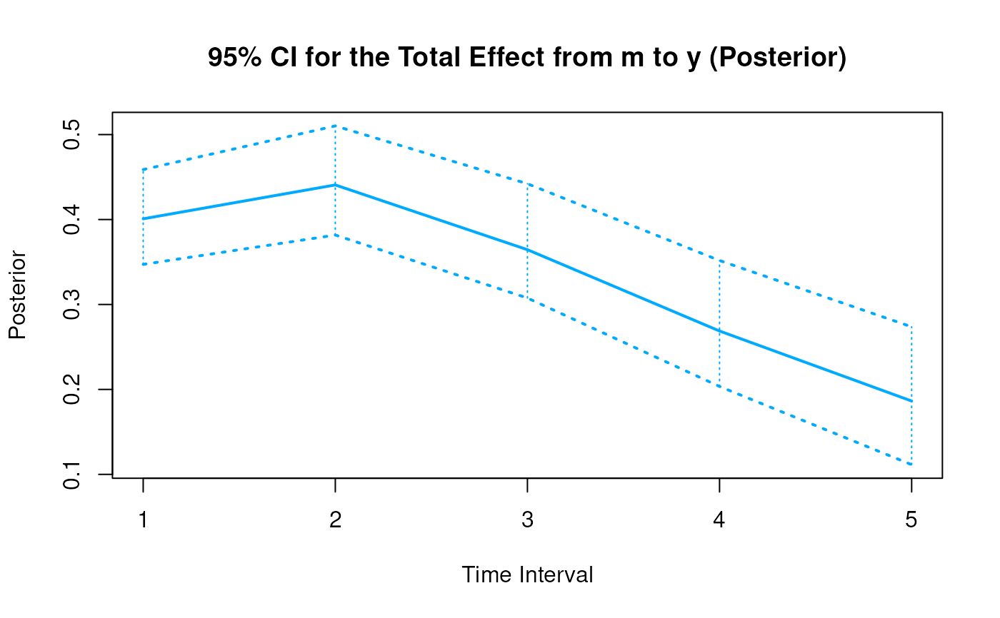
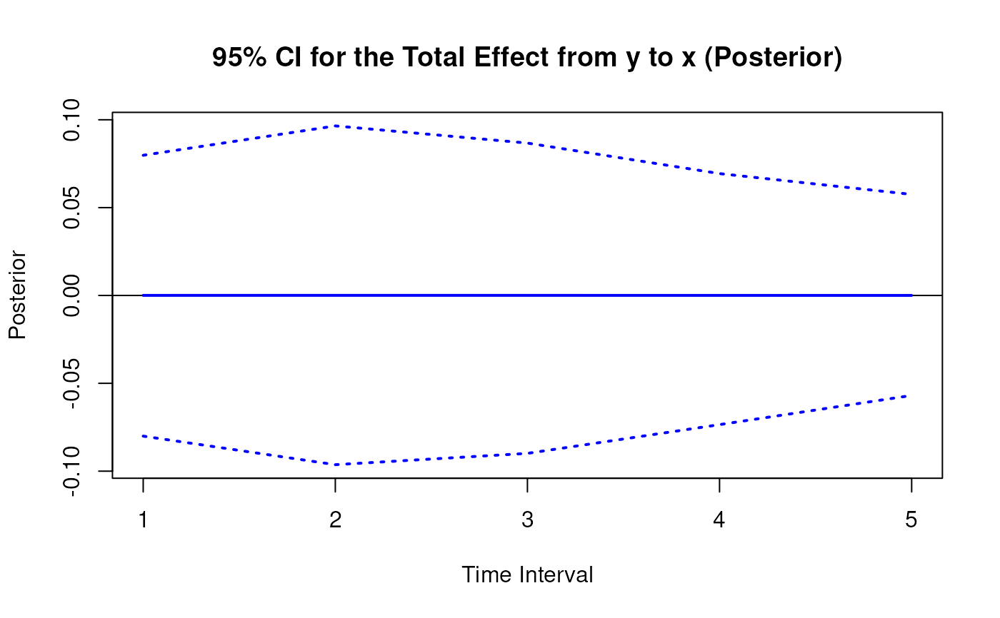
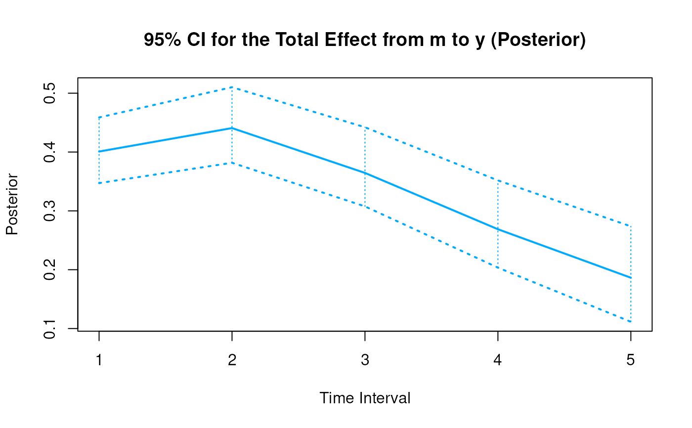
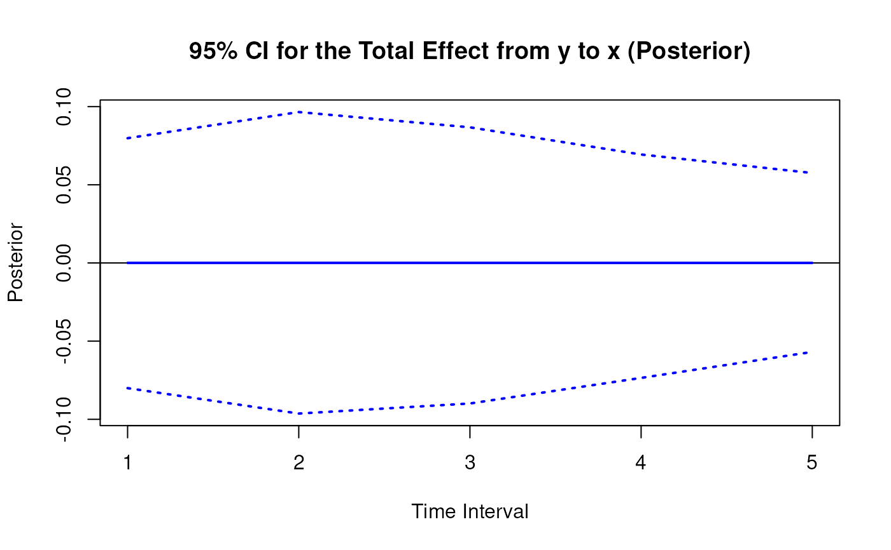

Posterior Sampling Distribution for the Elements of the Matrix of Lagged Coefficients Over a Specific Time Interval or a Range of Time Intervals
Source:R/cTMed-posterior-beta.R
PosteriorBeta.RdThis function generates a posterior sampling distribution for the elements of the matrix of lagged coefficients \(\boldsymbol{\beta}\) over a specific time interval \(\Delta t\) or a range of time intervals using the first-order stochastic differential equation model drift matrix \(\boldsymbol{\Phi}\).
Arguments
- phi
Numeric matrix. The drift matrix (\(\boldsymbol{\Phi}\)).
phishould have row and column names pertaining to the variables in the system.- delta_t
Numeric. Time interval (\(\Delta t\)).
- ncores
Positive integer. Number of cores to use. If
ncores = NULL, use a single core. Consider using multiple cores when number of replicationsRis a large value.- tol
Numeric. Smallest possible time interval to allow.
Value
Returns an object
of class ctmedmc which is a list with the following elements:
- call
Function call.
- args
Function arguments.
- fun
Function used ("PosteriorBeta").
- output
A list the length of which is equal to the length of
delta_t.
Each element in the output list has the following elements:
- est
A vector of total, direct, and indirect effects.
- thetahatstar
A matrix of Monte Carlo total, direct, and indirect effects.
Details
See Total().
References
Bollen, K. A. (1987). Total, direct, and indirect effects in structural equation models. Sociological Methodology, 17, 37. doi:10.2307/271028
Deboeck, P. R., & Preacher, K. J. (2015). No need to be discrete: A method for continuous time mediation analysis. Structural Equation Modeling: A Multidisciplinary Journal, 23 (1), 61–75. doi:10.1080/10705511.2014.973960
Ryan, O., & Hamaker, E. L. (2021). Time to intervene: A continuous-time approach to network analysis and centrality. Psychometrika, 87 (1), 214–252. doi:10.1007/s11336-021-09767-0
See also
Other Continuous Time Mediation Functions:
BootBeta(),
BootBetaStd(),
BootMed(),
BootMedStd(),
DeltaBeta(),
DeltaBetaStd(),
DeltaIndirectCentral(),
DeltaMed(),
DeltaMedStd(),
DeltaTotalCentral(),
Direct(),
DirectStd(),
ExpCov(),
ExpMean(),
Indirect(),
IndirectCentral(),
IndirectStd(),
MCBeta(),
MCBetaStd(),
MCIndirectCentral(),
MCMed(),
MCMedStd(),
MCPhi(),
MCPhiSigma(),
MCTotalCentral(),
Med(),
MedStd(),
PosteriorIndirectCentral(),
PosteriorMed(),
PosteriorTotalCentral(),
Total(),
TotalCentral(),
TotalStd(),
Trajectory()
Examples
phi <- matrix(
data = c(
-0.357, 0.771, -0.450,
0.0, -0.511, 0.729,
0, 0, -0.693
),
nrow = 3
)
colnames(phi) <- rownames(phi) <- c("x", "m", "y")
vcov_phi_vec <- matrix(
data = c(
0.00843, 0.00040, -0.00151,
-0.00600, -0.00033, 0.00110,
0.00324, 0.00020, -0.00061,
0.00040, 0.00374, 0.00016,
-0.00022, -0.00273, -0.00016,
0.00009, 0.00150, 0.00012,
-0.00151, 0.00016, 0.00389,
0.00103, -0.00007, -0.00283,
-0.00050, 0.00000, 0.00156,
-0.00600, -0.00022, 0.00103,
0.00644, 0.00031, -0.00119,
-0.00374, -0.00021, 0.00070,
-0.00033, -0.00273, -0.00007,
0.00031, 0.00287, 0.00013,
-0.00014, -0.00170, -0.00012,
0.00110, -0.00016, -0.00283,
-0.00119, 0.00013, 0.00297,
0.00063, -0.00004, -0.00177,
0.00324, 0.00009, -0.00050,
-0.00374, -0.00014, 0.00063,
0.00495, 0.00024, -0.00093,
0.00020, 0.00150, 0.00000,
-0.00021, -0.00170, -0.00004,
0.00024, 0.00214, 0.00012,
-0.00061, 0.00012, 0.00156,
0.00070, -0.00012, -0.00177,
-0.00093, 0.00012, 0.00223
),
nrow = 9
)
phi <- MCPhi(
phi = phi,
vcov_phi_vec = vcov_phi_vec,
R = 1000L
)$output
# Specific time interval ----------------------------------------------------
PosteriorBeta(
phi = phi,
delta_t = 1
)
#>
#> Total, Direct, and Indirect Effects
#>
#> $`1`
#> interval est se R 2.5% 97.5%
#> from x to x 1 0.6998 0.0463 1000 0.6151 0.7991
#> from x to m 1 0.4977 0.0345 1000 0.4344 0.5679
#> from x to y 1 -0.1005 0.0307 1000 -0.1602 -0.0410
#> from m to x 1 0.0021 0.0439 1000 -0.0829 0.0894
#> from m to m 1 0.6013 0.0322 1000 0.5393 0.6640
#> from m to y 1 0.3994 0.0283 1000 0.3447 0.4551
#> from y to x 1 0.0009 0.0427 1000 -0.0843 0.0824
#> from y to m 1 0.0000 0.0307 1000 -0.0589 0.0598
#> from y to y 1 0.4997 0.0265 1000 0.4500 0.5523
#>
# Range of time intervals ---------------------------------------------------
posterior <- PosteriorBeta(
phi = phi,
delta_t = 1:5
)
plot(posterior)


 # Methods -------------------------------------------------------------------
# PosteriorBeta has a number of methods including
# print, summary, confint, and plot
print(posterior)
#>
#> Total, Direct, and Indirect Effects
#>
#> $`1`
#> interval est se R 2.5% 97.5%
#> from x to x 1 0.6998 0.0463 1000 0.6151 0.7991
#> from x to m 1 0.4977 0.0345 1000 0.4344 0.5679
#> from x to y 1 -0.1005 0.0307 1000 -0.1602 -0.0410
#> from m to x 1 0.0021 0.0439 1000 -0.0829 0.0894
#> from m to m 1 0.6013 0.0322 1000 0.5393 0.6640
#> from m to y 1 0.3994 0.0283 1000 0.3447 0.4551
#> from y to x 1 0.0009 0.0427 1000 -0.0843 0.0824
#> from y to m 1 0.0000 0.0307 1000 -0.0589 0.0598
#> from y to y 1 0.4997 0.0265 1000 0.4500 0.5523
#>
#> $`2`
#> interval est se R 2.5% 97.5%
#> from x to x 2 0.4907 0.0543 1000 0.3994 0.6117
#> from x to m 2 0.6476 0.0525 1000 0.5522 0.7579
#> from x to y 2 0.0783 0.0347 1000 0.0050 0.1411
#> from m to x 2 0.0031 0.0515 1000 -0.0970 0.1046
#> from m to m 2 0.3626 0.0493 1000 0.2690 0.4606
#> from m to y 2 0.4395 0.0332 1000 0.3789 0.5078
#> from y to x 2 0.0011 0.0516 1000 -0.1025 0.0999
#> from y to m 2 0.0004 0.0497 1000 -0.1008 0.0965
#> from y to y 2 0.2496 0.0306 1000 0.1939 0.3104
#>
#> $`3`
#> interval est se R 2.5% 97.5%
#> from x to x 3 0.3448 0.0547 1000 0.2528 0.4631
#> from x to m 3 0.6336 0.0647 1000 0.5207 0.7680
#> from x to y 3 0.2484 0.0356 1000 0.1777 0.3183
#> from m to x 3 0.0034 0.0500 1000 -0.0930 0.1029
#> from m to m 3 0.2195 0.0594 1000 0.1071 0.3407
#> from m to y 3 0.3641 0.0335 1000 0.3028 0.4321
#> from y to x 3 0.0010 0.0473 1000 -0.0955 0.0913
#> from y to m 3 0.0008 0.0598 1000 -0.1181 0.1113
#> from y to y 3 0.1248 0.0288 1000 0.0711 0.1838
#>
#> $`4`
#> interval est se R 2.5% 97.5%
#> from x to x 4 0.2428 0.0539 1000 0.1526 0.3541
#> from x to m 4 0.5526 0.0716 1000 0.4337 0.7058
#> from x to y 4 0.3425 0.0398 1000 0.2701 0.4224
#> from m to x 4 0.0031 0.0461 1000 -0.0876 0.0980
#> from m to m 4 0.1337 0.0636 1000 0.0143 0.2657
#> from m to y 4 0.2693 0.0351 1000 0.2060 0.3392
#> from y to x 4 0.0008 0.0391 1000 -0.0804 0.0731
#> from y to m 4 0.0009 0.0617 1000 -0.1224 0.1118
#> from y to y 4 0.0626 0.0304 1000 0.0032 0.1251
#>
#> $`5`
#> interval est se R 2.5% 97.5%
#> from x to x 5 0.1714 0.0531 1000 0.0838 0.2841
#> from x to m 5 0.4531 0.0749 1000 0.3274 0.6108
#> from x to y 5 0.3674 0.0449 1000 0.2855 0.4639
#> from m to x 5 0.0027 0.0411 1000 -0.0776 0.0890
#> from m to m 5 0.0819 0.0635 1000 -0.0414 0.2158
#> from m to y 5 0.1876 0.0374 1000 0.1198 0.2662
#> from y to x 5 0.0006 0.0307 1000 -0.0638 0.0584
#> from y to m 5 0.0010 0.0577 1000 -0.1192 0.1073
#> from y to y 5 0.0316 0.0342 1000 -0.0349 0.0988
#>
summary(posterior)
#> effect interval est se R 2.5% 97.5%
#> 1 from x to x 1 0.6997747580 0.04630881 1000 0.615077559 0.79909237
#> 2 from x to m 1 0.4977235070 0.03450318 1000 0.434406622 0.56791660
#> 3 from x to y 1 -0.1004675237 0.03073191 1000 -0.160219435 -0.04098514
#> 4 from m to x 1 0.0021286527 0.04386103 1000 -0.082852223 0.08944692
#> 5 from m to m 1 0.6012676812 0.03216130 1000 0.539291917 0.66398633
#> 6 from m to y 1 0.3993665208 0.02830867 1000 0.344729306 0.45514405
#> 7 from y to x 1 0.0008925094 0.04274947 1000 -0.084349428 0.08239238
#> 8 from y to m 1 -0.0000227856 0.03074610 1000 -0.058850419 0.05980749
#> 9 from y to y 1 0.4997169263 0.02648556 1000 0.449984999 0.55228822
#> 10 from x to x 2 0.4906545242 0.05433336 1000 0.399419871 0.61173690
#> 11 from x to m 2 0.6475616948 0.05246535 1000 0.552153140 0.75786017
#> 12 from x to y 2 0.0782641460 0.03474429 1000 0.004972431 0.14110172
#> 13 from m to x 2 0.0031259059 0.05150021 1000 -0.096990937 0.10462061
#> 14 from m to m 2 0.3625732052 0.04926183 1000 0.268958333 0.46063125
#> 15 from m to y 2 0.4394825317 0.03317360 1000 0.378918829 0.50781142
#> 16 from y to x 2 0.0010705091 0.05162416 1000 -0.102532405 0.09989007
#> 17 from y to m 2 0.0004191363 0.04967283 1000 -0.100770484 0.09654877
#> 18 from y to y 2 0.2496182384 0.03064911 1000 0.193901260 0.31038246
#> 19 from x to x 3 0.3447959364 0.05467864 1000 0.252788824 0.46310472
#> 20 from x to m 3 0.6335664259 0.06465743 1000 0.520666214 0.76798977
#> 21 from x to y 3 0.2484295345 0.03560143 1000 0.177739549 0.31828824
#> 22 from m to x 3 0.0033514648 0.04999419 1000 -0.093038023 0.10287867
#> 23 from m to m 3 0.2195493733 0.05938397 1000 0.107093500 0.34066995
#> 24 from m to y 3 0.3641024074 0.03347521 1000 0.302822411 0.43209314
#> 25 from y to x 3 0.0009727941 0.04734722 1000 -0.095547013 0.09128994
#> 26 from y to m 3 0.0007791430 0.05982904 1000 -0.118056515 0.11127119
#> 27 from y to y 3 0.1247982965 0.02882179 1000 0.071081827 0.18383621
#> 28 from x to x 4 0.2428498616 0.05389348 1000 0.152597586 0.35410705
#> 29 from x to m 4 0.5525503979 0.07158618 1000 0.433719879 0.70584106
#> 30 from x to y 4 0.3425288687 0.03976568 1000 0.270116254 0.42244066
#> 31 from m to x 4 0.0031375797 0.04613214 1000 -0.087630063 0.09803768
#> 32 from m to m 4 0.1336677491 0.06360383 1000 0.014283419 0.26572962
#> 33 from m to y 4 0.2692920919 0.03513585 1000 0.205977318 0.33924884
#> 34 from y to x 4 0.0007937789 0.03909627 1000 -0.080439385 0.07313009
#> 35 from y to m 4 0.0009498124 0.06166868 1000 -0.122390771 0.11181218
#> 36 from y to y 4 0.0625772505 0.03044208 1000 0.003215126 0.12507286
#> 37 from x to x 5 0.1714221013 0.05311600 1000 0.083759930 0.28405495
#> 38 from x to m 5 0.4530949765 0.07494278 1000 0.327425315 0.61079299
#> 39 from x to y 5 0.3674390791 0.04490339 1000 0.285480283 0.46391752
#> 40 from m to x 5 0.0027204770 0.04113404 1000 -0.077637039 0.08897828
#> 41 from m to m 5 0.0819256088 0.06349271 1000 -0.041364783 0.21579696
#> 42 from m to y 5 0.1876370155 0.03736094 1000 0.119828254 0.26616449
#> 43 from y to x 5 0.0006133391 0.03067619 1000 -0.063841060 0.05843968
#> 44 from y to m 5 0.0009647481 0.05769467 1000 -0.119229212 0.10730828
#> 45 from y to y 5 0.0315704856 0.03418778 1000 -0.034923849 0.09883701
confint(posterior, level = 0.95)
#> effect interval 2.5 % 97.5 %
#> 1 from x to x 1 0.615077559 0.79909237
#> 2 from x to m 1 0.434406622 0.56791660
#> 3 from x to y 1 -0.160219435 -0.04098514
#> 4 from x to x 2 0.399419871 0.61173690
#> 5 from x to m 2 0.552153140 0.75786017
#> 6 from x to y 2 0.004972431 0.14110172
#> 7 from x to x 3 0.252788824 0.46310472
#> 8 from x to m 3 0.520666214 0.76798977
#> 9 from x to y 3 0.177739549 0.31828824
#> 10 from x to x 4 0.152597586 0.35410705
#> 11 from x to m 4 0.433719879 0.70584106
#> 12 from x to y 4 0.270116254 0.42244066
#> 13 from x to x 5 0.083759930 0.28405495
#> 14 from x to m 5 0.327425315 0.61079299
#> 15 from x to y 5 0.285480283 0.46391752
plot(posterior)
# Methods -------------------------------------------------------------------
# PosteriorBeta has a number of methods including
# print, summary, confint, and plot
print(posterior)
#>
#> Total, Direct, and Indirect Effects
#>
#> $`1`
#> interval est se R 2.5% 97.5%
#> from x to x 1 0.6998 0.0463 1000 0.6151 0.7991
#> from x to m 1 0.4977 0.0345 1000 0.4344 0.5679
#> from x to y 1 -0.1005 0.0307 1000 -0.1602 -0.0410
#> from m to x 1 0.0021 0.0439 1000 -0.0829 0.0894
#> from m to m 1 0.6013 0.0322 1000 0.5393 0.6640
#> from m to y 1 0.3994 0.0283 1000 0.3447 0.4551
#> from y to x 1 0.0009 0.0427 1000 -0.0843 0.0824
#> from y to m 1 0.0000 0.0307 1000 -0.0589 0.0598
#> from y to y 1 0.4997 0.0265 1000 0.4500 0.5523
#>
#> $`2`
#> interval est se R 2.5% 97.5%
#> from x to x 2 0.4907 0.0543 1000 0.3994 0.6117
#> from x to m 2 0.6476 0.0525 1000 0.5522 0.7579
#> from x to y 2 0.0783 0.0347 1000 0.0050 0.1411
#> from m to x 2 0.0031 0.0515 1000 -0.0970 0.1046
#> from m to m 2 0.3626 0.0493 1000 0.2690 0.4606
#> from m to y 2 0.4395 0.0332 1000 0.3789 0.5078
#> from y to x 2 0.0011 0.0516 1000 -0.1025 0.0999
#> from y to m 2 0.0004 0.0497 1000 -0.1008 0.0965
#> from y to y 2 0.2496 0.0306 1000 0.1939 0.3104
#>
#> $`3`
#> interval est se R 2.5% 97.5%
#> from x to x 3 0.3448 0.0547 1000 0.2528 0.4631
#> from x to m 3 0.6336 0.0647 1000 0.5207 0.7680
#> from x to y 3 0.2484 0.0356 1000 0.1777 0.3183
#> from m to x 3 0.0034 0.0500 1000 -0.0930 0.1029
#> from m to m 3 0.2195 0.0594 1000 0.1071 0.3407
#> from m to y 3 0.3641 0.0335 1000 0.3028 0.4321
#> from y to x 3 0.0010 0.0473 1000 -0.0955 0.0913
#> from y to m 3 0.0008 0.0598 1000 -0.1181 0.1113
#> from y to y 3 0.1248 0.0288 1000 0.0711 0.1838
#>
#> $`4`
#> interval est se R 2.5% 97.5%
#> from x to x 4 0.2428 0.0539 1000 0.1526 0.3541
#> from x to m 4 0.5526 0.0716 1000 0.4337 0.7058
#> from x to y 4 0.3425 0.0398 1000 0.2701 0.4224
#> from m to x 4 0.0031 0.0461 1000 -0.0876 0.0980
#> from m to m 4 0.1337 0.0636 1000 0.0143 0.2657
#> from m to y 4 0.2693 0.0351 1000 0.2060 0.3392
#> from y to x 4 0.0008 0.0391 1000 -0.0804 0.0731
#> from y to m 4 0.0009 0.0617 1000 -0.1224 0.1118
#> from y to y 4 0.0626 0.0304 1000 0.0032 0.1251
#>
#> $`5`
#> interval est se R 2.5% 97.5%
#> from x to x 5 0.1714 0.0531 1000 0.0838 0.2841
#> from x to m 5 0.4531 0.0749 1000 0.3274 0.6108
#> from x to y 5 0.3674 0.0449 1000 0.2855 0.4639
#> from m to x 5 0.0027 0.0411 1000 -0.0776 0.0890
#> from m to m 5 0.0819 0.0635 1000 -0.0414 0.2158
#> from m to y 5 0.1876 0.0374 1000 0.1198 0.2662
#> from y to x 5 0.0006 0.0307 1000 -0.0638 0.0584
#> from y to m 5 0.0010 0.0577 1000 -0.1192 0.1073
#> from y to y 5 0.0316 0.0342 1000 -0.0349 0.0988
#>
summary(posterior)
#> effect interval est se R 2.5% 97.5%
#> 1 from x to x 1 0.6997747580 0.04630881 1000 0.615077559 0.79909237
#> 2 from x to m 1 0.4977235070 0.03450318 1000 0.434406622 0.56791660
#> 3 from x to y 1 -0.1004675237 0.03073191 1000 -0.160219435 -0.04098514
#> 4 from m to x 1 0.0021286527 0.04386103 1000 -0.082852223 0.08944692
#> 5 from m to m 1 0.6012676812 0.03216130 1000 0.539291917 0.66398633
#> 6 from m to y 1 0.3993665208 0.02830867 1000 0.344729306 0.45514405
#> 7 from y to x 1 0.0008925094 0.04274947 1000 -0.084349428 0.08239238
#> 8 from y to m 1 -0.0000227856 0.03074610 1000 -0.058850419 0.05980749
#> 9 from y to y 1 0.4997169263 0.02648556 1000 0.449984999 0.55228822
#> 10 from x to x 2 0.4906545242 0.05433336 1000 0.399419871 0.61173690
#> 11 from x to m 2 0.6475616948 0.05246535 1000 0.552153140 0.75786017
#> 12 from x to y 2 0.0782641460 0.03474429 1000 0.004972431 0.14110172
#> 13 from m to x 2 0.0031259059 0.05150021 1000 -0.096990937 0.10462061
#> 14 from m to m 2 0.3625732052 0.04926183 1000 0.268958333 0.46063125
#> 15 from m to y 2 0.4394825317 0.03317360 1000 0.378918829 0.50781142
#> 16 from y to x 2 0.0010705091 0.05162416 1000 -0.102532405 0.09989007
#> 17 from y to m 2 0.0004191363 0.04967283 1000 -0.100770484 0.09654877
#> 18 from y to y 2 0.2496182384 0.03064911 1000 0.193901260 0.31038246
#> 19 from x to x 3 0.3447959364 0.05467864 1000 0.252788824 0.46310472
#> 20 from x to m 3 0.6335664259 0.06465743 1000 0.520666214 0.76798977
#> 21 from x to y 3 0.2484295345 0.03560143 1000 0.177739549 0.31828824
#> 22 from m to x 3 0.0033514648 0.04999419 1000 -0.093038023 0.10287867
#> 23 from m to m 3 0.2195493733 0.05938397 1000 0.107093500 0.34066995
#> 24 from m to y 3 0.3641024074 0.03347521 1000 0.302822411 0.43209314
#> 25 from y to x 3 0.0009727941 0.04734722 1000 -0.095547013 0.09128994
#> 26 from y to m 3 0.0007791430 0.05982904 1000 -0.118056515 0.11127119
#> 27 from y to y 3 0.1247982965 0.02882179 1000 0.071081827 0.18383621
#> 28 from x to x 4 0.2428498616 0.05389348 1000 0.152597586 0.35410705
#> 29 from x to m 4 0.5525503979 0.07158618 1000 0.433719879 0.70584106
#> 30 from x to y 4 0.3425288687 0.03976568 1000 0.270116254 0.42244066
#> 31 from m to x 4 0.0031375797 0.04613214 1000 -0.087630063 0.09803768
#> 32 from m to m 4 0.1336677491 0.06360383 1000 0.014283419 0.26572962
#> 33 from m to y 4 0.2692920919 0.03513585 1000 0.205977318 0.33924884
#> 34 from y to x 4 0.0007937789 0.03909627 1000 -0.080439385 0.07313009
#> 35 from y to m 4 0.0009498124 0.06166868 1000 -0.122390771 0.11181218
#> 36 from y to y 4 0.0625772505 0.03044208 1000 0.003215126 0.12507286
#> 37 from x to x 5 0.1714221013 0.05311600 1000 0.083759930 0.28405495
#> 38 from x to m 5 0.4530949765 0.07494278 1000 0.327425315 0.61079299
#> 39 from x to y 5 0.3674390791 0.04490339 1000 0.285480283 0.46391752
#> 40 from m to x 5 0.0027204770 0.04113404 1000 -0.077637039 0.08897828
#> 41 from m to m 5 0.0819256088 0.06349271 1000 -0.041364783 0.21579696
#> 42 from m to y 5 0.1876370155 0.03736094 1000 0.119828254 0.26616449
#> 43 from y to x 5 0.0006133391 0.03067619 1000 -0.063841060 0.05843968
#> 44 from y to m 5 0.0009647481 0.05769467 1000 -0.119229212 0.10730828
#> 45 from y to y 5 0.0315704856 0.03418778 1000 -0.034923849 0.09883701
confint(posterior, level = 0.95)
#> effect interval 2.5 % 97.5 %
#> 1 from x to x 1 0.615077559 0.79909237
#> 2 from x to m 1 0.434406622 0.56791660
#> 3 from x to y 1 -0.160219435 -0.04098514
#> 4 from x to x 2 0.399419871 0.61173690
#> 5 from x to m 2 0.552153140 0.75786017
#> 6 from x to y 2 0.004972431 0.14110172
#> 7 from x to x 3 0.252788824 0.46310472
#> 8 from x to m 3 0.520666214 0.76798977
#> 9 from x to y 3 0.177739549 0.31828824
#> 10 from x to x 4 0.152597586 0.35410705
#> 11 from x to m 4 0.433719879 0.70584106
#> 12 from x to y 4 0.270116254 0.42244066
#> 13 from x to x 5 0.083759930 0.28405495
#> 14 from x to m 5 0.327425315 0.61079299
#> 15 from x to y 5 0.285480283 0.46391752
plot(posterior)


 


